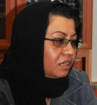

پذيرش > سایت نوشته ها > فاجعه خاموش (قتل های ناموسی)


 فاجعه خاموش (قتل های ناموسی) فاجعه خاموش (قتل های ناموسی)
6 آبان 1389 - - نسخه قابل چاپ
پروین بختیارنژاد-4 آبان 1389
مدرسه فمینیستی : انتشار اینترنتی کتاب «فاجعة خاموش» که پژوهشی ارزشمند و شجاعانه درباره «قتل های ناموسی» در مملکت ماست فرصت مغتنمی در اختیار ما قرار داد تا خوانندگان سایت مدرسه فمینیستی را با گوشه ای از فعالیت های فرهنگی و مستمر نویسنده کتاب خانم «پروین بختیارنژاد» آشنا سازیم. پروین بختیارنژاد پژوهشگر، روزنامه نگار، نویسنده و از کنشگران با سابقه ی جنبش زنان است. ایشان متولد سال 1341 خورشیدی، در رشته گرافیک فارغ التحصیل شده، و مادر دو فرزند است. فعالیت های اجتماعی و فرهنگی خود را از سال 1356 ـ وقتی که در کلاس اول دبیرستان مشغول تحصیل بود ـ آغاز می کند. در خلال فعالیت هایش در انجمن اسلامی دبیرستانهای قزوین، با آقای «رضا علیجانی» که او هم از زمره ی فعالان پُر آوازه ی این انجمن ها در شهر قزوین بود آشنا می شود و سرانجام به سال 1363 این دو فعال مدنی با یکدیگر ازدواج می کنند. پروین بختیارنژاد از سال 1374 به طور مداوم و حرفه ای، کار روزنامه نگاری را آغاز می کند. ایشان در کنار فعالیت های مطبوعاتی اش، کار پژوهش در حوزه مسائل زنان را نیز با جدیت و صبوری، همچنان ادامه می دهد. توجه و کِشش خاص او به سرنوشت غم انگیز زنان فرودست جامعه باعث شده که پروین حوزه ی کارهای تحقیقاتی اش را بر زنان آسیب دیده از ستم جنسی، متمرکز نماید و آثار و گزارش ها و کتاب هایی که تا کنون به قلم وی منتشر شده عمدتاَ در ارتباط با زنانی است که به واسطه تحمل این ستم مضاعف، یا سر آخر بی هیچ پناهی، مظلومانه به قتل می رسند یا به ناگزیر دست به خودکشی می زنند. «زنان خودسوخته» یکی از کتابهای پروین بختیارنژاد است که در سال 1381 توسط نشر صمدیه منتشر شده است.
کتاب حاضر «فاجعه خاموش» (که برای نخستین بار در سایت مدرسه فمینیستی منتشر می شود) نیز همانطور که از عنوان اش پیدا است در رابطه با قتل های ناموسی است. شاید خواندن متن کامل این اثر (که اکنون در آستانه روز جهانی مبارزه با خشونت علیه زنان، به صورت فایل P.D.F در سایت مدرسه منتشر شده) باعث افزایش آلام روحی خوانندگان شود. با وجود این احتمال اما نویسنده در مقدمه کتاب، امیدواری اش را به ایجاد موجی فراگیر برای ریشه کنی این پدیده شرم آور، چنین بیان کرده است: « اميد و اطمينان دارم که افراد زيادي پس از خواندن اين کتاب به اين بحث خواهند پيوست. اين تحقيق يکسال به طول انجاميد و اميدوارم که بعد از انتشار اين کتاب، ديگراني نيز از زواياي مختلف به اين مسئله شوم بپردازند و هر يک، گامي در جهت حل آن پيش نهند.»
از خانم پروین بختیارنژاد که متن کامل اثر تحقیقی و تکان دهنده خود را در اختیار سایت مدرسه قرار دادند به سهم خود سپاسگزاریم. با انتشار این اثر پژوهشی، مدرسه فمینیستی با دستی پُر و پیمان تر به استقبال «روز جهانی مبارزه با خشونت علیه زنان» می رود.
در زیر، برای آشنایی مقدماتی خوانندگان و به خصوص دانشجویان رشته مطالعات زنان با محتوای کتاب، بخش پیشگفتار آن را می آوریم. برای مطالعه متن کامل، به فایل پی دی اف کتاب در انتهای همین صفحه مراجعه فرمایید :
پیشگفتار کتاب «فاجعه خاموش»
شيدا زن 16 ساله مريواني كه يك كودك 2ساله نيز داشت در روز 11/7/88 با ضربات چاقوي برادرش مهدي در خيابان جان سپرد. او كه همسري معتاد داشت، در حال حرف زدن با مردي در خيابان توسط برادرش به قتل رسيد.
مردي به علت سوءظن به همسرش او را پس از 29سال زندگي مشترك در برابر ديدگان فرزندانش به قتل رساند.
در پاييز سال 81 ، خانوادهاي در خوزستان در كيف دختر خود كارت تبريكي بدون امضاء يافتند. دختر توسط عمويش به قتل رسيد و خانواده آن دختر قاتل را بخشيدند.
سعيده دختر 14 ساله بلوچستاني به دليل شك پدر به او، به وسيله پدر، برادر و دوستان برادرش سنگسار شد و به قتل رسيد.
نگين شيخالاسلام يكي از فعالان زن در استان كردستان، اعلام کرد: در نيمه اول سال 1387 ، پانزده قتل ناموسي در كردستان انجام گرفته است.
دلبر خسروي، دختر 17 سالهاي در دهي نزديكي مريوان، به دليل داشتن قصد طلاق از همسر ناخواسته و اجباري خود، توسط پدرش سر بريده شد.
مردي 46 سالهاي همسر صيغهاي و نوجوانش را كه 15 سال بيشتر نداشت به دليل سوءظن با ضربات چاقو مجروح كرد و مردي كه در خيابان در حال حرفزدن با او بود را با ضربات چاقو به قتل رساند. شعبه 71 دادگاه كيفري استان تهران با اين استدلال كه او با تصور مهدورالدم بودن مقتول وي را كشته است، رأي خود را صادر و او را به پرداخت ديه محكوم كرد.
در لرستان ليلا به دليل سرباز زدن از ازدواج اجباري با پسر عمويش مجبور شد كه با پسر مورد علاقهاش فرار كند. وي بعد از دستگيري توسط برادران و پسر عمويش به درختي بسته و به آتش كشيده شد.
در دزفول، جاسم كه خود داراي سه زن بوده دختر 15 سالهاش را به دليل اينكه فكر ميكرد عمويش به او تجاوز كرده، سر بريد.
باز در دزفول، مردي با سوءظن به همسر دومش و با ادعاي اينكه پسرش متعلق به او نيست، سر وي و فرزند 7 سالهاش را بريد.
در تربتجام، مردي با همدستي برادر و پسرعمويش، خواهر جوان خود را كشته و در چاه مخروبهاي دفن كرد. وي پس از يك ماه با مراجعه به كلانتري خود را به پليس معرفي كرد و دليل اين قتل را بيحيثيت شدن خانوادهاش اعلام نمود.
در سقز «شنو فرهادي» به دليل امتناع از ازدواج اجباري به دست برادرش كشته شد.
«فرشته نجاتي» كه 18 سال از شوهرش كوچكتر بود و به قصد طلاق به خانه پدرياش باز گشته بود، به اتهام رابطه با مردي ديگر و بر اساس يك اتهام واهي و اثبات نشده، توسط پدرش سر بريده شد.
در سال 1387 تعدادي از انجمنها و نهادهاي مدني و مدافع حقوق بشر متشكل از تعدادي از زنان مريوان ضمن محكوم كردن قتل شهين نصراللهي كه توسط برادرش در روستاي دزلي كشته شده بود، تظاهرات كردند.
زهرا دختر 7 ساله اهوازي زماني كه مادرش بر سر اختلافي با شوهرش (پدر زهرا)، به همراه وي به منزل پدرياش ميرود، پس از بازگشت مورد سوءظن پدر خود قرار ميگيرد. پدر به زهراي 7 ساله شك ميكند كه شايد زماني كه او در منزل پدربزرگش بوده، مورد تجاوز دايياش قرار گرفته باشد. وي با اين سوءظن به دست پدر كشته ميشود.
20 شهريور سال 87 ، خديجه زن جوان آباداني قصد داشت از شوهر معتاد خود طلاق بگيرد. شوهرش به محض اطلاع از تصميم او با دو عموي خديجه تماس ميگيرد و به آنها ميگويد خديجه با مرد ديگري رابطه دارد. دو عموي خديجه، روزي كه وي به همراه خواهرش در خيابان در حال تردد بودند، او را ميبينند. آنها خديجه را به زور سوار ماشين خود کرده و به خارج از شهر ميبرند. سپس يكي از عموها دستان او را ميگيرد و عموي ديگر با كارد ميوهخوري شروع به بريدن گردن او ميكند.
خديجه، از اين جنايت جان سالم بدر برد. او ميگويد: هر قدر به عموهايم التماس ميكردم، يكي از عموهايم فرياد ميزد بگو با كدام مرد رابطه داري كه شوهرت فهميده. وقتي به آنها ميگفتم: اين حرف دروغ است و من هميشه مطيع شوهرم بودم، او بيشتر فرياد ميكشيد.
وقتي عمويم با چاقوي ميوهخوري ذرهذره گلويم را ميبريد احساس ميكردم كه آرام آرام روح از بدنم خارج ميشود، حتي حنجره و تارهاي صوتيام بريده شد ولي بدنم هنوز حس داشت تا شعاع يكمتريام خون ريخته شده بود. هنوز اندك جان و رمقي برايم باقي مانده بود. موبايل خواهرم را زير آستين لباسم به محكمي نگهداشتم، وقتي عموهايم فكر كردند كه ديگر كارم تمام است. از من دور شدند. در اين فاصله با پدرم تماس گرفتم و ديگر هيچ نفهميدم. من از مرگ برگشتم تا حق ضايعشده خود را پس بگيرم.
در فراشبند استان فارس، سوسن 17ساله در حالي كه به پسر ديگري علاقه داشت، مجبور به نامزدي با پسرعمويش شده بود. سوسن با اين نامزدي مخالفت ميكند و به همين دليل پدر و پسرعمويش او را با چادرش خفه ميكنند.
در گرگان مردي به دليل سوءظن به همسر 28 سالهاش در جلو چشمان كودكش، با پاشيدن اسيد به روي همسرش او را به قتل ميرساند.
با اين اخبار كه هر روزه ميشنويم و خشونت آشكار را در خانههاي ناامن ما فرياد ميزند چه بايد كرد؟ بايد به كدام قانون پناه برد؟ از كدام نهاد بايد كمك خواست؟ و بالاخره با مشاهده انبوه اين قربانيان زن و كودك، با وجدان زخمخورده خود بايد چه كنيم؟
آيا اين قربانيان، قرباني «غيرت» و «ناموسپرستي» مردان خود شدهاند و يا آنكه اين زنان و كودكان، قرباني باورهاي پدرسالارانه پُر ريشه در جامعه ما هستند؟
پروین بختیارنژاد سپس در بخشی دیگر از کتاب خود، تحت عنوان « ناموس و غيرت؛ توجيهگر قتلهاي ناموسي» با استناد به پژوهش های میدانی و مستندش، وقتی به ریشه یابی این معضل منحوس اجتماعی می پردازد چنین می نویسد:
واژه ناموس در فرهنگ لغات ايرانيان در همهجا مترادف و به معناي غيرت، شرف و مردانگي تعريف شده است. از آنجايي كه غيرت، شرف و مردانگي مردان هميشه ارتباط مستقيم با زنان داشته، واژه غيرت نيز در ادبيات ما ناموسپرستي تعريف شده است و منظور از ناموس، زنان خانوادهاي هستند كه وابسته به مرد است. در نتيجه مردان هميشه بايد مراقب نواميس خود، بر اساس برداشت و استنباط خود از واژه غيرت و شرافت باشند.
اما تفسير غيرت و شرف مردان، داستاني پر از فراز و فرود دارد. تا آنجا كه به بهانه غيور بودن، كليه حقوق فردي و انساني زنان توسط مردان ربوده ميشود و تنها از موجودي به نام زن، اطاعت محض ميماند و نه چيز ديگر. چرا كه تفاسير و برداشتهاي متفاوت و حتي متناقض از اين مقوله وارد جزئيترين و خصوصيترين ابعاد زندگي زنان ميشود، تا از اين طريق به مردان ثابت كند كه موجوداتي غيور و ناموسدوست هستند و اين غيرت و شرافت به او اعتبار و غرور اجتماعي ميدهد.
در داستان سربلندي مردان، هرقدر زن مطيعتر و به حقوق فردي و اجتماعي خود بياعتناتر باشد، ميتواند مردان خانواده و فاميلش را اعتبار بيشتري بخشد. البته زنان نيز در دنياي سنتي، چنين تعريفي از خود دارند. در نتيجه آنگونه زندگي ميكنند كه مرد و هنجارهاي دنياي قديم براي او تعريف كردهاند. او در واقع خود و فرزندانش را جزء مايملك مرد ميداند و بايد طوري زندگي كند كه او ميخواهد و او ميپسندد.
اما كوچکترين تلنگر انديشه مدرن، ميتواند تعاريف كهنه دنياي قديم را به چالش كشد و زنان را با چراهاي متعدد، در رابطه با خود، اطرافيانش و از همه مهمتر با هنجارهاي موروثي مواجه سازد و او را به درگيري جدي وادارد.
در اين درگيري او به دنبال خود فراموششدهاش است. او بارها و بارها گذشته را مرور كرده تا ببيند در كجا ايستاده. ديروزش پر از دريغ است، امروزش پر از خستگي از ديروز و براي رسيدن به فردا بايد از تونل تاريكي عبور كند تا خود را به سوسوي آن شعلهاي كه از دوردستها او را به سمت خود فرا ميخواند، برساند.
ديروز پر از افسوس و امروز پر از بايدهاي سخت و طاقتفرسا، راهي جز مبارزهاي سخت براي او باقي نميگذارد. در اين مبارزه جانهاي بيشماري به نام «ناموس» قرباني شدهاند. ولي خبر تعداد اندكي از اين قربانيان به گوش من و شما رسيده است. بقيه آنها در تنهايي و گمنامي جان خود را از دست دادهاند. اما اگر زنده ميماندند بر آن بودند به گونهاي ديگر زندگي كنند. به اين قتلها، «قتلهاي ناموسي» ميگويند.
اين نمونهها به خوبي نشان ميدهد كه تعريف غيرت و شرافت مردان تا چه حد به بيراهه رفته است. چنانكه درخواست طلاق، پدري را بيناموس ميكند، علاقهمندي يك پسر و دختر حتي با رعايت آداب و رسوم، غيرت برادري را جريحهدار ميكند. سوءظن به كودك 7 ساله، پدر را در كشتن كودك خود حتي به ترديد هم نمياندازد. امتناع از ازدواج اجباري، مردان خانواده را بيناموس ميكند و منجربه قتل دختر ميشود.
شيوع و گستردگي فاجعه خاموش «قتلهاي ناموسي» نه تنها از طريق فعالان حقوق زنان و نيز فعالان حقوقبشر و روزنامهنگاران به کرات تذکر داده شده، بلکه از طرف برخي مسئولان قضايي و انتظامي نيز بدان اذعان شده و يا در موردش در برخي روزنامههاي سراسري يا محلي بحث شده و موضوعي قابل تغيير تلقي گرديده است.
اين مسئله اجتماعي از نوع آسيبهاي اجتماعي است که با برنامهريزيهاي دقيق علمي و پايبندي به آن برنامهها ميتوان آن را تغيير داد و يا حداقل ميتوان تا حدودي آن را مهار کرد.
اين آسيب اجتماعي بايد تغيير کند، زيرا يک جنايت عريان و ضدانساني است. قتل هيچ فردي بر اساس حدس و گمان و سوءظن در هيچ جامعه و هيچ فرهنگ و هيچ کتاب قانوني پذيرفته نيست، مگر نادر جوامعي که دچار واپسماندگي فرهنگي شدهاند.
در تحقيق ميداني اين نوشتار بيشتر درباره مناطق قومي و طايفگي بحث شده، اما اين به آن معنا نيست که در کلان شهرها و يا غير خردهفرهنگهاي مورد بحث، قتل ناموسي وجود ندارد. تنها گستردگي و شيوع اين مسئله در برخي مناطق قومي و طايفگي مرا بر آن داشت که به بررسي قتلهاي ناموسي در آن مناطق بپردازم.
اين کتاب حاصل سفر به استانهاي مختلف، گفتوگو با افراد صاحبنظر برخي استانها، مطالعه نظري و گفتوگو با کارشناسان، جامعهشناسان، روانشناسان، قرآنپژوه و کارشناسان فقه و حقوق است و نيز نگاهي اجمالي به کشورهايي که قتلهاي ناموسي در آن جوامع نيز به عنوان يک مسئله اجتماعي مطرح است.
در پروسه اين تحقيق با زنان جواني ديدار داشتم که در منطقه خود شاهد قتلهاي ناموسي فراواني بودند. برخي از آنها به اين فکر افتادهاند که موضوع پاياننامه خود را قتلهاي ناموسي در استان خود قرار دهند.
مدرسه فمینیستی
ارسال به
بالاترین
،
توییتر
،
فریندفید
،
فیسبوک
در همين بخش :
 یک خبر تلخ؟ یک قانونشکنی؟ یک تصمیم بخشنامهای جدید؟ یک خبر تلخ؟ یک قانونشکنی؟ یک تصمیم بخشنامهای جدید؟
چرا بایست به سکسوالیته پرداخت؟ / نفیسه آزاد
آزارجنسی خانگی؛ «قربانی» نه، «نجات یافته»
زنان، بزرگترین بازندگان بهار عرب
سانسور از دیدگاه جنسیتی/الهه امانی
ديگر بخش ها :
طرح یک میلیون امضا
|
مقالات
|
سایت نوشته ها
|
اخبار
|
گزارش كمپين
|
گفت و گو
|
علیه سکوت
|
كوچه به كوچه
|
نامه های شما
|
گزارش ویژه
|
گفتگو با اعضا
|
ویژه سالگرد کمپین
|
تصویر برابری
|
دل آرام علی
|
تریبون
|
مقالات
|
تاریخ شفاهی
|
خارج از چارچوب
|
کتابخانه
|
درباره کمپین
|
کمپین در شهرها
|
کمپین در بند
|
صدای تغییر
|
ویژه 22 خرداد
|
لایحه حمایت از خانواده
|
گالری
|
عشا مومنی
|
امیر یعقوبعلی
|
خدیجه مقدم
|
راحله عسگری زاده و نسیم خسروی
|
پروین اردلان،جلوه جواهری، مریم حسین خواه، ناهید کشاورز
|
زینب پیغمبرزاده
|
سعیده امین، سارا ایمانیان، محبوبه حسین زاده، ناهید کشاورز و همایون نامی
|
احترام شادفر
|
نسیم سرابندی زاده،فاطمه دهدشتی
|
وبلاگ مهمان
|
پرونده خرم آباد
|
دستگیری ها
|
مریم مالک
|
پرستو اللهیاری
|
مهرنوش اعتمادی
|
سمیه رشیدی
|
Other Languages
|
همراهان
|
«فراخوان کمپین ده روز با بهاره هدایت»
| English
|